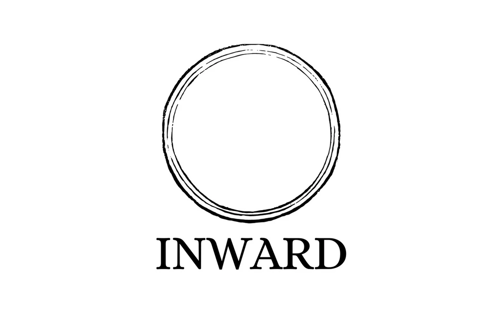
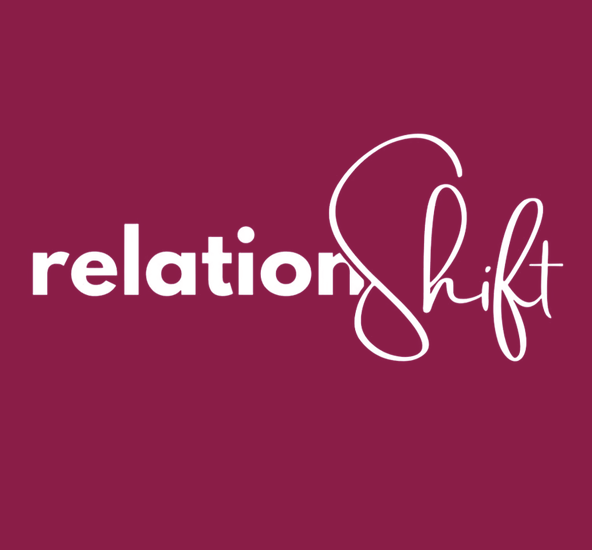

Gameworlds
In Archiarchy are many Gameworlds unfolding

Building Communication Bridges
Have you ever cooked a pot of soup with a match? Changed a car engine with a fork? Ever thought you were being clear when communicating only to discover the other person heard something different? Building Communication Bridges – Inside and Out is a multi-day workshop designed to explore new ways of communicating and connecting with ourselves and others.

Radically Alive Women
Radically Alive Women is a Gameworld sourced and co-created by Women who are reclaiming their authentic, radically-responsible aliveness. This is an invitation to play full out with other Women: to create and inhabit next culture, a regenerative culture, with the innate wisdom that you bring through your Being.

Inward Men
Dismantling the conditioning you received in Patriarchy about what a man is, what a man should be, and how a man should interact in the world is a ground-breaking experience. You have the possibility of standing in reality and looking about you at what is possible.

Embodied Freedom
Embodied Freedom is a movement of people reclaiming and remembering community. Building a culture of playful, awake and responsible adults, by creating awareness emotionally, mentally, energetically, physically. Offering Workshops, Trainings and Coaching rooted and empowered by the context of Possibility Management.

RelationShift
Everything starts with contact. Contact with your inner world, with other people, with the non-human world, and even with the objects and environments around you. The quality of that contact shapes the relationships you create and sustain.
We invite you to take a closer look at the kinds of relationships you want in your life: personally, professionally, and collectively. This begins with you and how you choose to engage.
What if you claimed back your capacity to generate what is needed? To make the decisions you have been postponing for a while? What might shift if you began to experiment with new actions and, through that, create different results?